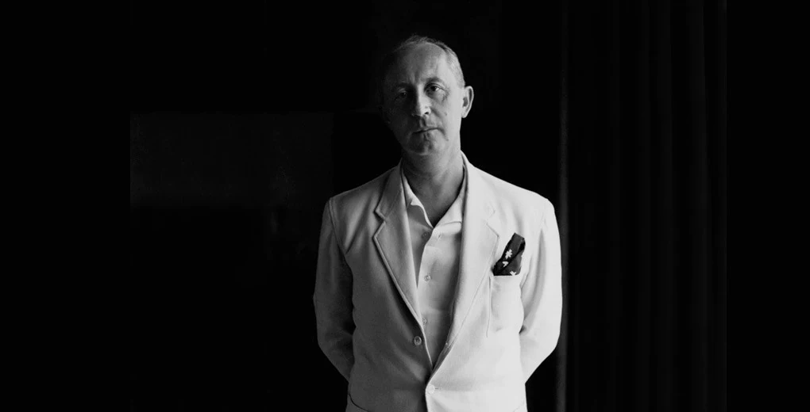
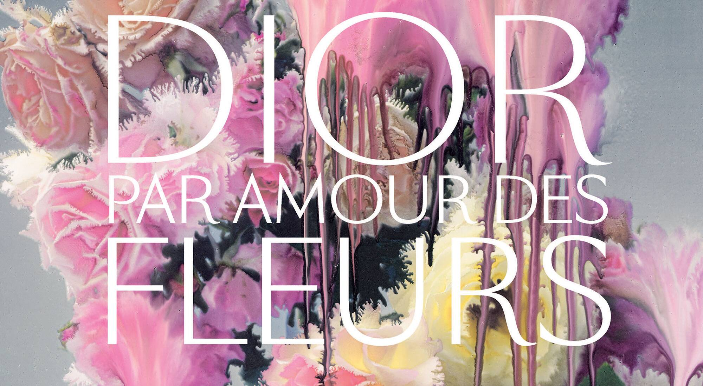

Christion Dior was a French couturier, best known for his eponymous fashion house which is often reffered to as just Dior. Born in the seaside town of Granville on the coast of Normandy in 1905, he was the son of a wealthy fertiliser manufacturer and was one of five children. Aged five, he moved with his family to Paris. Although his parents had hopes of him becoming a diplomat, Dior was artistically inclined and began to sell his sketches on the street to make pocket money. Upon leaving school, Dior took over a small art gallery which his father bought for him, where he and a friend sold work by artists including Pablo Picasso.
Following the onset of the Great Depression in 1929, the death of both his mother and his brother, and the collapse of his father's business, Dior was forced to close his art gallery. He then went to work with fashion designer Robert Piguet until he was called up for military service in 1940. At the end of his service in 1942, he began working for couturier Lucien Long, where he and Pierre Balmain were the primary designers. During the war, Lelong - like other French ateliers including Jeanne Lanvin and Nina Ricci - dressed the wives of Nazi officers and French collaborators as a way of preserving the fashion industry throughout the conflict for both economic and artistic reasons. At the same time, Dior's younger sister Catherine joined the French Resistance, resulting in her capture by the Gestapo and subsequent imprisonment at the Ravensbrück concentration camp. She survived and was liberated in 1945. In 1947, Dior named his debut fragrance Miss Dior as a tribute to her.
He founded the house of Christian Dior on December 16, 1946 at 30 Avenue Montaigne Paris, backed by Marcel Boussac, a cotton-fabric magnate. Officially, the house of Dior considers 1947 to be the year of conception as that is when Dior showed his first collection.
On February 12, 1947, Dior showed his debut collection:
Dior established a luxury ready-to-wear house on the corner of 5th Avenue and 57th Street in New York in November 1948. It was the first of its kind. In the same year, he launched Dior Parfums - with Miss Dior being the first fragrance to launch, and Diorama launching the following year. In 1949, Dior was the first couturier to arrange licensed production of his designs. Having realised the importance of the complete look - and that the New Look could not be successfully achieved without the correct Dior shoes, gloves and hat - Dior, together with business partner Jacques Rouët, licensed his name to a range of luxury accessories. Furs, stockings, ties and perfume were also manufactured in regional centres across the world, spreading his brand name quickly around the globe. Although this move was heavily criticised by the French Chamber of Couture - who denounced the move as cheapening the haute couture industry - licensing became a profitable move for Dior and the atelier's lesson was followed by nearly all of the period's fashion houses.
